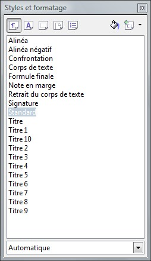
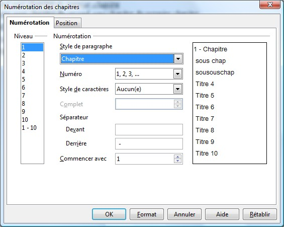
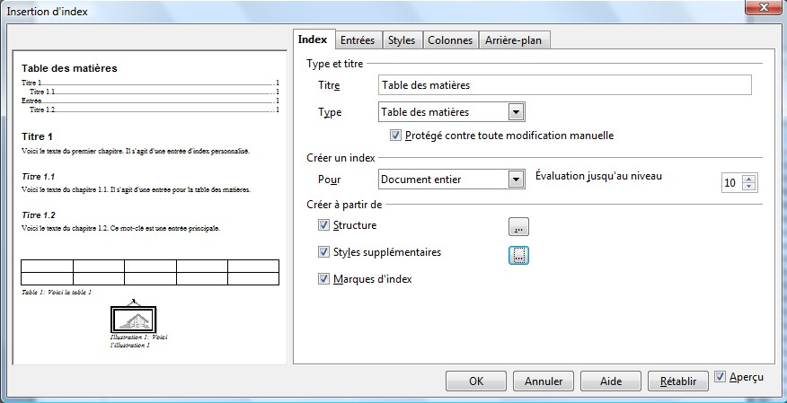

Je suis A-dream, ou Rihatsu dans d'autres communautés. Voici mon premier tutoriel sur Writer : une table des matières. Cela vous permettra d'organiser votre document pour le rendre plus agréable. Pour ce faire, vous apprendrez à sauter une page, appliquer / créer un style, numéroter les chapitres et insérer un index.
Se procurer Writer / Sur quel texte se basera notre index ?
Writer est le traitement de texte de la suite OpenOffice.Org.
Euh, t'es bien gentil mais... c'est quoi "Traitement de texte" et "Openoffice.Org" ?
Un logiciel de traitement de texte est un logiciel permettant de saisir et de modifier des textes tout en les mettant en forme. Il en existe plusieurs : le plus connu, Microsoft Office Word (souvent appelé Word), fait partie de la suite bureautique payante Microsoft Office avec d'autres logiciels tels qu'un tableur (Excel), et un logiciel de présentation (PowerPoint). C'est de par son prix exorbitant que nous allons utiliser une autre suite bureautique appelée OpenOffice.Org qui, elle, est gratuite. Elle comprend un traitement de texte (utilisé dans ce tutoriel), un tableur (présenté ici), un logiciel de présentation et d'autres logiciels performants. Vous pouvez télécharger cette suite ici.
Dans ce tutoriel, je vais vous apprendre à faire une table des matières. Notre index se basera sur un fichier tout bête :
Premier chapitre
Premier sous-chapitre du premier chapitre
Second sous-chapitre du premier chapitre
Premier sous-chapitre du second sous-chapitre du premier chapitre
Second chapitre
Troisième chapitre
Comme vous le voyez, c'est un fichier vraiment très simple. :) À la fin du tutoriel, vous saurez afficher une table des matières comme celle-ci, et même mieux encore :
L'index que l'on va intégrer prendra de la place. Pour en avoir assez, il nous faut sauter une page même si, dans notre exemple, à peine la moitié d'une page nous suffirait amplement. Faisons simple : sautons une page. Je vous vois déjà en train d'appuyer sur Entrée jusqu'à la prochaine page. Heureusement, Writer comprend déjà une fonctionnalité qui fait ça : le saut manuel. Pour y accéder, il faut aller dans le menu "Insertion" puis dans "Saut manuel" et sélectionner "Saut de page". Ainsi, votre première page est vierge et n'attend que votre index.
La fenêtre Style et Formatage, alias F11
Avant d'utiliser cette merveilleuse fonction, il faut appliquer un format sur vos titres. Sélectionnez "Premier chapitre" et appliquez un style. Sélectionnez "Premier sous-chapitre du premier chapitre" et appliquez-lui un format à lui aussi, différent du précédent. Faites-en de même pour "Premier sous-chapitre du second sous-chapitre du premier chapitre". Ne faites pas tous les chapitres, sous-chapitres et "sous-sous-chapitres", faites un seul chapitre, sous-chapitre et "sous-sous-chapitre", ce sera fait automatiquement plus tard.
Maintenant, nous pouvons utiliser "Style et formatage". Pour l'ouvrir, deux choix s'offrent à vous : appuyer sur F11 ou aller dans le menu "Format" et sélectionner "Style et formatage".

La fenêtre "Style et formatage" Nous allons créer un nouveau style pour nos titres de chapitres. Pour cela, sélectionnez "Premier chapitre" et cliquez sur le bouton tout à droite dans la barre d'outils de la fenêtre "Style et formatage". Des options s'offrent à vous : sélectionnez "Créer un nouveau style à partir de la sélection" ; choisissez un nom dans la fenêtre qui vous le demandera (pour ma part, c'est chapitre pour les chapitres, sous-chapitre pour les sous-chapitres, etc.). Faites-en de même pour le premier sous-chapitre et le "sous-sous-chapitre".
Maintenant, il faut appliquer ce style aux autres chapitres et sous-chapitres (non pas aux sous-sous-chapitres, puisqu'il n'y en a qu'un seul). Pour ce faire, il faut sélectionner "Second chapitre" et double-cliquer sur le style correspondant dans la fenêtre "Style et formatage", de manière à lui appliquer le style des autres chapitres et sous-chapitres.
Maintenant, il faut numéroter les chapitres. Pour ce faire, il faudra utiliser les styles, c'est pour cela que je vous les ai fait appliquer plus tôt. Pour cela, on va utiliser la numérotation de chapitres de Writer. Elle se trouve dans "Outils", "Numérotation de chapitres". Une boîte de dialogue s'ouvre.

Numérotation des chapitres
Dans "Style de paragraphe", choisissez le nom des chapitres (dans mon exemple, Chapitre). Choisissez un numéro et ce que vous souhaitez mettre avant ou après le séparateur. Les numéros peuvent être de plusieurs formes : par exemple I, II, III ou 1, 2, 3 ou encore A, B, C (d'autres choix sont aussi possibles). Vous pouvez mettre des séparateurs comme pour afficher "1 -" ou "(1) - " ou même encore "1°)".
On s'impatiente ! On veut créer une table des matières et toi, tu nous fais appliquer des styles, numéroter des chapitres... Mais quand est-ce qu'on commence réellement ?! :colere2:
Bien, vous êtes servis : c'est dans cette partie que nous allons attaquer l'index.
Placez votre curseur au début de votre document. Allez dans "Insertion" puis dans "Index" et une deuxième fois "Index". Là, une boîte de dialogue s'ouvre.

L'écran d'insertion d'index
Ajustez le titre, et validez.
Votre table des matières a été créée. :D
Liens hypertextes
Pour insérer des liens (hypertextes : pour les ouvrir, il faudra cliquer sur le lien et simultanément appuyer sur Ctrl) dans l'index, il faut éditer ce dernier. Effectuez un clic droit sur la table des matières et choisissez l'option pour éditer l'index. Sélectionnez l'onglet Entrées. La structure du document se présente par défaut comme ceci.
E# E T #
Non, ce n'est pas du mandarin. Une petite explication s'impose : c'est la façon dont sera présentée la ligne représentant ce passage dans l'index. Chaque lettre (ou double lettre) a sa signification. Voici le tableau qui résume tout :
Balise
Signification
E#
Numéro de la ligne s'il existe ou numéro du chapitre
E
Texte de la ligne ou texte du chapitre
T
Tabulation
#
Numéro de la page correspondant au chapitre
DH
Début de l'hyperlien (balise ouvrante)
FH
Fin de l'hyperlien (balise fermante)
Donc, pour mettre des liens hypertextes, il faudra utiliser les balises DH et FH. Donc, pour mettre les liens juste sur le texte (c'est-à-dire "Premier chapitre"), il faudra écrire ce code :
E# DH E FH T #
Les onglets suivants : changer la couleur du fond
L'onglet qui suit sert à assigner des styles aux différentes parties de la table des matières : titre, niveau 1, niveau 2, etc. Celui d'après sert à ajuster les colonnes. C'est-à-dire si vous voulez que votre table des matières s'affiche en deux colonnes, ou plus. Celui d'après permet de changer la couleur du fond. Oui, messieurs-dames, vous m'avez entendu, ce hideux gris qui sert de fond à notre table des matières peut _ enfin _ être supprimé et changé en blanc, ou en toute autre couleur.
Actualiser l'index
Vous voulez rajouter un sous-chapitre ? C'est simple. Après le premier sous-chapitre, ajoutez "Premier sous-chapitre du premier sous-chapitre du premier chapitre" et appliquez le style des sous-sous-chapitres. La numérotation des chapitres s'effectue automatiquement. L'index, quant à lui, ne s'est pas actualisé. Pour ce faire, il faut effectuer un clic droit sur la table des matières et choisir l'option "Actualiser l'index".
Voilà, vous avez réussi à créer votre première table de matières. Vous êtes forts, hein ? ;)
Si vous rencontrez un quelconque problème, vous pouvez me contacter par MP ou demander de l'aide sur les forums.